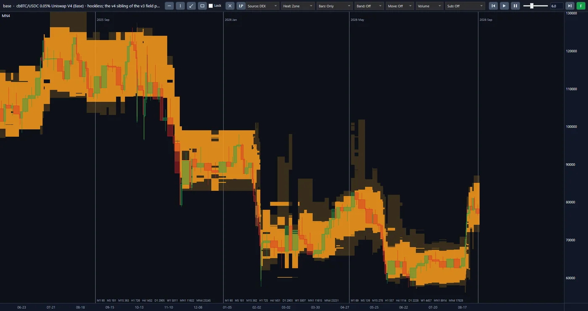
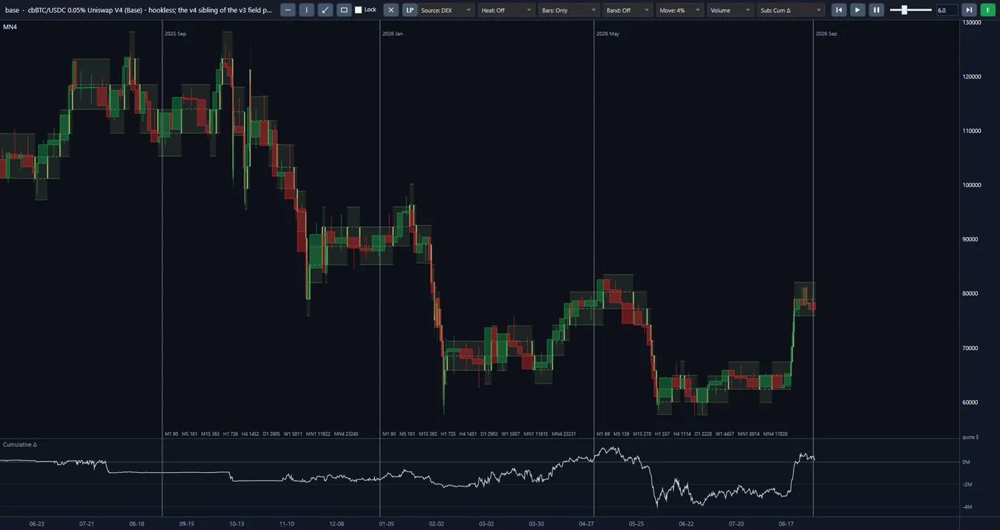
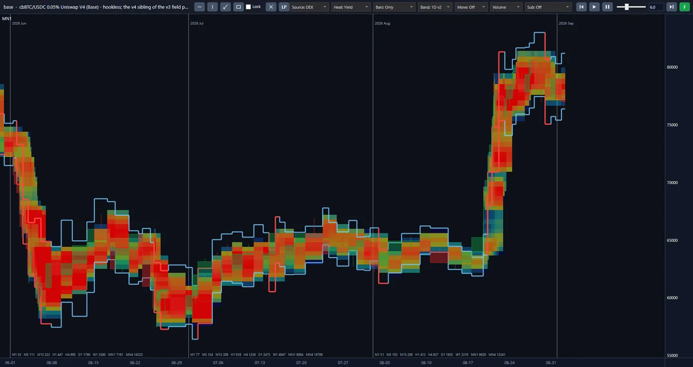

Introduction
Sur une plateforme d’échange décentralisée, acheteur et vendeur ne traitent pas l’un avec l’autre. La contrepartie de chaque transaction est un « pool » : du capital que plusieurs personnes ont mis en commun pour que d’autres puissent échanger contre lui et payer des frais en retour. Quiconque place de l’argent dans le pool reçoit une part de ces frais. Mais le pool qui offre le meilleur revenu ce mois-ci n’est pas nécessairement le même le mois suivant : les traders s’en vont, du capital frais arrive et la part de chacun diminue. La plupart des capitaux restent là où ils se sont placés le premier jour.
Nous avons décidé de déplacer le capital en suivant l’opportunité, et de peser chaque déplacement à l’aune des données du marché lui-même avant de l’effectuer.
Le projet DeFi LP a rassemblé l’historique complet de 136 pools sur quatre réseaux blockchain, du premier jour de chaque pool à aujourd’hui, au niveau de chaque événement. À partir de ces données, nous simulons le capital placé dans un pool, et son déplacement entre pools, au sein d’une reconstitution fidèle du marché lui-même, et nous avons vérifié le résultat par rapport à de l’argent réel. L’objectif est un fonds automatisé qui gère de l’argent et le déplace entre les pools, vers le meilleur rendement net.
À l’intérieur de la plateforme
Ce sont de vraies captures d’écran de la plateforme du projet, et non des maquettes. Les trois vues montrent un seul pool : cbBTC/USDC avec des frais de 0,05 % sur Uniswap V4, sur le réseau Base. Cliquez sur l’image pour l’agrandir.



Les barres de prix du pool de juin 2025 à août 2026 et, autour d’elles, la vue thermique Zone : des zones colorées sur les niveaux de prix.
Les mêmes barres avec les cadres des mouvements de 4 % et, en dessous, le panneau du delta cumulé en dollars.
Les trois derniers mois dans la vue thermique Yield, avec la bande journalière (Band: 1D) autour du prix.
Approche
L’argent se place là où son compte net est meilleur, et se déplace quand ce compte change. Le travail se déroule en trois étapes :
-
Des données brutes à l’image complète du pool
Le tableau de bord d’un pool n’affiche que le prix et le volume échangé. Nous traitons chaque événement enregistré sur la chaîne et reconstituons l’état du pool à chaque instant. Le résultat est une image de la quantité de capital placée à chaque niveau de prix, et du moment où elle est arrivée ou repartie.
-
De l’image du pool à la mesure de chaque pool
Notre simulateur place un capital hypothétique dans le pool reconstitué et calcule les frais qu’il aurait perçus ainsi que ce que le mouvement de prix en aurait repris. Il produit un résultat net comparable pour chaque pool. Tous les pools sont mesurés par un même critère.
-
De la mesure des pools à la gestion de capitaux
À partir de ces résultats, l’algorithme détermine les pools auxquels allouer le capital, la plage de prix de chaque position et le moment des réallocations. Cette étape fait actuellement l’objet de recherches.
Points clés
-
Un capital qui ne reste pas au même endroit.
Sur ce marché, l’opportunité se déplace, et le capital immobile la manque. Un pool peut connaître des transactions aujourd’hui alors que le capital le quitte depuis des mois ; nous en avons vu et enregistré un cas réel dans nos données. L’algorithme compare en continu tous les pools qu’il surveille, et non une seule fois le premier jour.
-
Une réallocation qui couvre ses coûts.
Chaque déplacement a un coût : les frais de transaction et l’écart de prix à la sortie comme à l’entrée. Courir après chaque taux plus élevé dépense le profit en frais. Dans notre mesure, le coût du déplacement fait partie du compte, et un déplacement qui ne le rattrape pas n’est pas effectué.
-
Le bénéfice net, et non le taux affiché.
Le taux affiché sur le tableau de bord d’un pool ne montre que les frais. Ce que nous rapportons, c’est le revenu net de la perte due au mouvement de prix, du coût de transaction et de l’écart de prix à l’entrée. Chaque composante est présentée séparément, pour que l’on voie d’où le gain vient et où il est parti.
-
Une simulation confrontée à de l’argent réel.
Dans ce marché, de nombreux calculs sont justes sur le papier et ne le sont pas en pratique. Nous avons comparé les frais calculés par le simulateur à ceux qu’environ 44 000 positions réelles ont effectivement perçus sur la chaîne, dans six pools. Même dans le pool le plus défavorable, l’écart total reste inférieur à un dixième de pour cent.
-
Des données vérifiées par rapprochement avec la blockchain.
Comparer des pools sur des données incomplètes conduit à une mauvaise décision, et des données incomplètes ne se signalent pas d’elles-mêmes. Pour l’ensemble des 136 pools, les événements archivés ont été comparés à la chaîne, et un rapport de contrôle d’intégrité a été émis pour chaque pool. Cinq types de pool sur quatre réseaux sont mesurés par un même moteur.
-
Le capital dans le pool, sans intermédiaire.
Une partie des pertes de ce marché ne venait pas du marché lui-même, mais de contrats intermédiaires qui détenaient le capital d’autrui. Dans notre conception, le capital sera placé dans le pool directement et au nom de son propriétaire. L’algorithme décidera seulement de sa destination.
Feuille de route
-
Réalisé
L’infrastructure de données, la reconstitution des pools pour les cinq types, le simulateur de capital et le système de rapports sont construits et testés.
-
Réalisé
Les règles de placement et de déplacement du capital ont été mesurées sur des pools aux comportements différents ; nous n’avons encore déclaré aucune stratégie définitive.
-
En cours
Finaliser la sélection des pools, valider la stratégie retenue hors échantillon et réécrire le système en vue de son exploitation opérationnelle.
-
Dernière étape
La dernière étape est la connexion aux données en direct et la gestion d’argent réel, sous la forme d’un fonds automatisé.
Technologie
La préparation des données est écrite en Python, et le moteur d’analyse et le simulateur en C#. L’archive de 136 pools est conservée dans plus de six mille fichiers, et la copie du serveur est identique à la copie de sauvegarde, fichier par fichier. Une modification n’est acceptée qu’après avoir réussi plus de 450 tests automatisés.